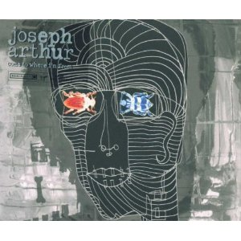
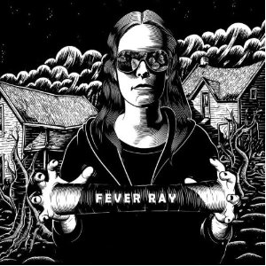
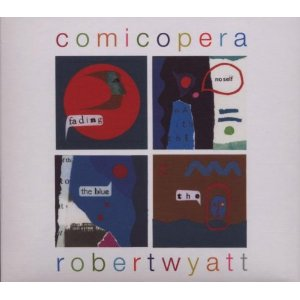

Top 100 Albums of 2000-2009 (Part Two: Individual Favourites)
By No Ripcord Staff
 Susumu Yokota
Susumu Yokota
We’ve all got records that we bang the drum for in defiance of the opinions of others. Votes were received for over 500 different albums when assembling our Top 100 of 2000-2009 list, so there were always going to be records that rated highly on individual writers’ lists that still didn’t make the cut. Our Top 100 list will follow next week but here, these much-loved records get their moment in the sun. These are albums that only received one vote, but ranked extremely highly with the writer in question. The following blurbs are effectively enthusiastic flag-waving from a sometimes lonely fan club.
[Bubbling Under] | [Individual Writers’ Picks] | [100-81] | [80-61] | [60-41] | [40-21] | [20-1]
Exploding Hearts
“Guitar Romantic”
(Dirtnap Records – 2003)
Guitar Romantic received an honourable mention in our Top 100 Debut Albums piece and thanks to my continuing championing of the record, here it is again. Sadly, my relentless hyping up of the album hasn’t resulted in a major breakthrough, as it’s still missed out on a Top 100 placing. But seriously, was there a more enjoyable punk-pop record in the 2000s? Of course there wasn’t! Guitar Romantic is brash and bratty to the point where you can literally hear the band sneering at you. The songs are unquestionably punk-pop, yet Exploding Hearts seem entirely immune to the trappings of the genre. It doesn’t sound tired, it doesn’t come off as a calculated retread - it’s simply a blast of pure, unadulterated fun that never grows old. And surely everyone has room for a record like that in their collection? David Coleman
Nelly Furtado
“Loose”
(Geffen/Mosley – 2006)
Canadian hippy-chick Nelly Furtado first made waves with the pop-folk melting pot of her precocious debut, Whoa, Nelly!, before entering the dreaded sophomore slump with its follow-up, Folklore. A much-needed change of approach came in the form of Loose which successfully recast her as a sleek urban bohemian and went on to become one of the defining pop records of the decade. Successfully blending elements of hip-hop, folk and Latin pop – and propelled by juggernaut singles Maneater and Promiscuous – it caused her career to skyrocket, helmed by the production of Timbaland and Danja operating at the peak of their powers. Their sound (stuttering, bass-heavy beats and minimal instrumentation) was utilised by several artists around that time, but craft and commerce were rarely balanced as effectively as they are on Loose and its companion album, Justin Timberlake’s FutureSex/LoveSounds. Gary McGinley
Joseph Arthur
“Come To Where I'm From”
(Real World Records – 2000)
Singer-songwriters are usually half-convincing when proclaiming their own imaginary self-importance. Joseph Arthur hadn’t solidified his legend, but he could certainly taste it – like the street corner busker you never bother to give a quarter to, he calls himself Benzo, rhymes surrealistic spoken word contortions and tries to sell you a personalized sketch. But on Come To Where I’m From, Arthur achieved the miraculous feat of painting a beautifully warped portrait of himself, built around a rich tapestry of junk instrumentation, slight psychedelic shadings and some of the most engrossing minor key strums this side of Leonard Cohen. His strength lies in how he manages to level his indulgences with a mopey façade that’s actually sincere, beautifying his avant-garde fixtures with some of the finest ragged arrangements you’ve never heard. Others were paying attention: fifteen years after Peter Gabriel gave him his blessing, he’s still going strong. Juan Edgardo Rodriguez
Maxïmo Park
“A Certain Trigger”
(Warp Records – 2005)
Recently, the NME took a swipe at Maxïmo Park, stating that they "obviously aren't" a “great British Band”; peculiarly, it was nestled in amongst an otherwise glowing 8/10 review. It's fairly indicative of how people view the group – a middling act who struck it big off the back of a handful of killer singles. A Certain Trigger deserves so much more respect than that. It's the sound of a band capturing lightning in a bottle; Paul Smith steps into his commanding role as one of the most enigmatic and entertaining frontmen of recent times with aplomb, while the band prove both tight and fluid in their playing, rocketing through the record and coming out the other side with a collection of fourteen of the best indie-pop tracks penned in the 00s. Give it another go - you'll be surprised how well it stands up. Gabriel Szatan
Slow Club
“Yeah So”
(Moshi Moshi – 2009)
If ever individual people are allowed their own personal house band, I’m claiming Slow Club. Their debut album, Yeah So, is an exceptionally enjoyable and melodious record, ranging from plaintive acoustic ballads to tracks brimming with joyous enthusiasm that seem to constantly accelerate. There’s a charming naivety to some of the arrangements, a feeling that’s reinforced by the frequent deployment of playground-style chanting throughout the record. Slow Club are no kids though; there’s emotional substance and maturity beneath the sugary indiepop of When I Go and Come On Youth, and album highlight It Doesn’t Have To Be Beautiful, Unless It’s Beautiful tosses out the most wonderfully heartfelt line as if without a second thought: “Waiting never quite felt like waiting when waiting was with you.” Joe Rivers
Randy Newman
“Harps and Angels”
(Nonesuch Records – 2008)
I feel sorry for people who don’t appreciate the unique genius of Randy Newman. No-one approaches his command of both ironic humor and harmony, and we humans need more of both. He can write pop songs like movie soundtracks, where the music actually relates to what is being said – a skill more should try to emulate. He is also the songwriter that most often moves me to genuine laughter and tears, and is the one artist I can’t seem to shuffle past on my iPod. This album is a strong entry in his canon, with moments standing up to his best work. For younger listeners: when you turn forty, pour yourself a glass of scotch, find some privacy, put on Losing You, and try to control yourself. Alan Shulman
Fever Ray
“Fever Ray”
(Rabid – 2009)
The Knife's lack of activity post-Silent Shout wasn't all bad; it provided Karin Dreijer-Andersson with the opportunity to create this solo record, which draws on its parent act's best qualities - elegant Scandinavian gloom; impeccable design; terrifying use of vocoders - while ditching some of their more atonal habits, making for a more accessible listening experience. However, it’s not exactly enjoyable. Fever Ray was largely informed by Dreijer-Anderson's experiences of motherhood, and it might well be the sound of her channelling post-natal depression, such is the sense of dread that pervades even the smallest details (never has so much drama been invested in “dishwasher tablets”). Mark Davison
Tom Waits
“Real Gone”
(ANTI- – 2004)
Tom Waits followed his 2002 double release of Blood Money and Alice with Real Gone in 2004. Rife with his trademark growl and unsurpassed knack for storytelling, Real Gone has an almost anachronistic charm that merges the sound of rusty antiquity with contemporary devices. To put it succinctly, the album’s opening song, Top of the Hill, features record scratching, but one could assume it was done with 78s. Experimenting with vocal loops and some of the murkiest production I’ve ever heard on an album, (Marc Ribot’s guitar sounds in Hoist The Rag could almost be considered “diner grease”), Real Gone is abstract blues that feels as though it’s existed for years. A marvel of wild characterizations (Shake It, Circus), despair (Dead and Lovely), classic relationship lament (Make It Rain) and his own soldier-centric salute (The Day After Tomorrow), Real Gone carried on Waits’ level of artistry, excellence and continual progression. Sean Caldwell
Manitoba
“Up In Flames”
(Leaf/Domino – 2003)
Over ten years ago, when the musical chameleon/mathematician Caribou was going by the name of Manitoba, he made an often overlooked but absolutely incredible record called Up In Flames. It’s a strange collection of electronic oddities, but it definitely sounds like Caribou. Crashing drums, intriguing structure and hovering falsetto vocals hover over tinkling keys, guitars and horn samples. It’s a patchwork of sound, meshing together differently in each bar of music. Constantly evolving, and constantly taking unexpected turns down new and exciting roads. It’s the strangest and best album from a man who has built a career on strange, excellent records. Andrew Baer
Sparks
“Lil’ Beethoven”
(Palm Pictures/Lil’ Beethoven – 2002)
“Say goodbye to the beat”, sings Russell Mael on The Rhythm Thief, the genre-defying album opener. He’s daring us to part ways with a basic musical element. And speaking of building blocks, I must warn there’s no bass here and that guitar and drums make a belated appearance on the album. Even the electronic music Sparks pioneered takes a backseat to quasi-classical orchestrations. The lyrics are odd, too: lines are sung over and over, sounding like mantras for cynics. Yet Sparks come up with the goods with their patterned sense of humor and gift for melody. They prove that the avant-garde mixes well with fun, so what are all these bands so angry about? Angel Aguilar
D'Angelo
“Voodoo”
(Cheeba Sound/Virgin – 2000)
Funk, soul, jazz, R&B… name a genre and there’s a pretty good chance that D’Angelo’s Voodoo took it to new places with the same confidence and success as Fela Kuti, Prince, Al Green, George Clinton or Marvin Gaye. There isn’t a style that D’Angelo didn’t seamlessly incorporate into his masterpiece, and thus it remains fresh every listen and, to this day, sounds unlike anything else. Filling every minute of the CD it’s pressed on, seamlessly transitioning from the funky opener to the hip-hop influences of the soul-tinged Devil’s Pie and then bringing Method Man onto the next track, Voodoo does nothing to hide its ambition, but with strong songs from one end to the other, there’s no reason to. It may not be the most touching record, but you’re hard pressed to find anything that approaches Voodoo’s level of sensuality. Forrest Cardamenis
The Secret Machines
“Now Here Is Nowhere”
(Reprise – 2004)
It’s still a mystery to me that this band never received the exposure that their superb collection of cosmic space-rock on this album made seem inevitable. Within the first ten seconds of the album, the opening to First Wave Intact, an unnervingly quiet few seconds erupt with Josh Garza’s bombastic snare and bass drums, releasing into a sonically orgasmic explosion that brings in the band’s signature kick and bass synchronicity. From there, the album peaks with psychedelic guitar ambience, catchy choruses that stray far from being poppy, and a rhythm section that stands unrivalled for sheer noise. Perhaps there will be those who claim it is the calling card of pretentious Zeppelin and Floyd revivalists, but for those willing to discard such arbitrary cynicism, consider Now Here Is Nowhere your guide to transcendental noise psychedelia for the 21st century. Dave Hogg
Susumu Yokota“Sakura”
(The Leaf Label – 2000)
Despite Yokota’s techno/house roots, he instead leapt into the production styles of post-Music For Airports, post-New Age ambience for Sakura, exposing his sampling to the patient, zen-like characteristics of slower BPMs, or no BPMs at all. Sakura finds Steve Reich, Joni Mitchell, and Return To Forever sharing the same headspace as gentle, acoustic guitar fillers looped to supreme lusciousness. Its sonic environments, though natural, are artificial spaces designed to rupture Satie's Furniture Music theory. Another way I think about these songs is considering them as “Reanimators of Memory.” They regulate emotions and physical recollections almost as effortlessly a photograph or a video would; they are themselves hard drives for anyone who wants to put themselves into them and remember what they were when they did so. Never before have I encountered an album that acts so much like an archive. Michael Iovino
Them Crooked Vultures
“Them Crooked Vultures”
(RCA/DGC/Interscope – 2009)
Super-groups have a notorious reputation for deflating like a cheap blow-up mistress. Combining QOTSA front man Josh Homme with ex-Nirvana drummer and Foo Fighters talisman Dave Grohl and rock ‘n’ roll legend, Led Zeppelin bassist John Paul Jones, you have yourself a mosh pit’s wet dream. Despite the theory that they could only disappoint, what actually happened was three incredible musicians combined their collective powers and created a sound which extracted the best of each of their respective day jobs whilst still remaining intelligently original. What you have are crunching riffs, stomach churning bass-lines, destructive drumming and tangible melodies: what more could you want? Matt Bevington
Death Cab For Cutie
“Transatlanticism”
(Barsuk Records – 2003)
Spanning fifteen years, the Death Cab discography is a finely structured narrative. I consider everything from the debut cassette to The Photo Album (and really The Stability EP) to be exposition, and everything from Plans onward denouement. Transatlanticism was, and will be, barring some miraculous rejuvenation, the climax of the band’s career. Greater emphasis was placed on continuity, atmosphere, and aesthetic, as evidenced by its more deliberate pace. The tracklist was universally good – beginning with a bang on The New Year and ending with a whimper on A Lack of Color, with a few stars thrown in between (Title and Registration, Death of an Interior Decorator). At the least, Transatlanticism deserves a nod as the most cohesive, focused, and captivating album by one of the most prominent indie acts of the past decade. Ben Jones
Nick Cave and the Bad Seeds
“Dig!!! Lazarus, Dig!!!”
(ANTI-/Mute – 2008)
I’m amazed that this isn’t top ten material; I thought it was a shoe-in. Nick Cave’s most consistent album (there’s no Green Eyes or Crow Jane to stink it up) and the sexiest piece of old man strutting this side of Mick Jagger. In true Nick Cave style, the record is a mix of multiple styles; More News From Nowhere is a Dylanesque breeze, Jesus Of The Moon a murderless ballad and Albert Goes West a true rock and roll, sing-along anthem. No other album could house a 50 year old shouting, “vulva!” and manage not to sound too ridiculous or weird. It’s erudite and silly, it’s tender and tough. He’s like a fine wine that Nick Cave, he just gets better with age. James McKenna
Throw Me The Statue
“Moonbeams”
(Secretly Canadian – 2008)
Since early 2008 I’ve been a Throw Me The Statue evangelist; annoying friends, family and strangers at every opportunity by telling them just how good Moonbeams is. It’s easy to get carried away when you like an album that not many people know about, but I’m not exaggerating when I say that this is one of the finest albums of the last decade. Put simply, it’s great indiepop in the vein of The Dodos, Neutral Milk Hotel, The Postal Service and Wilco - but for me it bests anything those acts have come up with. It’s the kind of instantly accessible music that could grow old quick, but the sheer quality and depth of the songwriting means it never does. Not bad work for one guy (Scott Reitherman) in his bedroom with too much gear for his own good. Joel Stanier
Late Of The Pier
“Fantasy Black Channel”
(Parlophone – 2008)
Late of the Pier's 2008 debut, Fantasy Black Channel, is one of the most inventive and interesting albums of the decade. Its musical style is hard to pinpoint – somewhere between electro and alternative indie would be a start – but it's evident from the range of musical effects and instruments used that there are influences from across the whole musical spectrum. And as if that weren't exciting enough, the whole thing is produced by the unreasonably talented Erol Alkan. The result is a chaotic masterpiece. If you're still not convinced, perhaps you'll be swayed by the inclusion of one of the best set of lyrics in modern music, from Heartbeat: "Pineapple pieces in brine, fucking around with your mind”. Genius. Craig Stevens
Robert Wyatt
“Comicopera”
(Domino – 2007)
Robert Wyatt gave us two masterpieces in the 2000s – 2003’s Cuckooland and 2007’s Comicopera. The latter is split into three ‘acts’, the first personal, the second political and the third spiritual. All three parts are marked by Wyatt’s very particular take on the jazz-inflected pop song. He fits into a continuum of distinctively English singer-songwriters, a line that would also have to include Kevin Ayers, Nick Drake, Roy Harper, Kate Bush, David Sylvian, Julian Cope, Tricky and PJ Harvey. If you’re unfamiliar with Wyatt’s work, I would recommend looking elsewhere for an introduction – Rock Bottom would be the place to start. But as the culmination of a career in avant-pop, these two albums are a beacon of defiance and independence in the face of ever-increasing facelessness and creeping mediocrity in the music industry. Plus, Just As You Are is simply the loveliest and most honest love song of the decade. David Wood
Venetian Snares
“Rossz Csillag Alatt Született”
(Planet Mu – 2005)
The umpteenth album by jaw-dropping breakcore producer Aaron Funk was a complete departure, not just from Funk’s established back-catalogue of terrifyingly chaotic assaults of drum machines, but perhaps for IDM as a movement: it is built upon extensive samples of classical music, exposing a dark, disturbing side to music which our culture has since (weirdly) deemed either easy-going or hyper-intellectual. The samples are mostly from early 20th-century orchestral works (Bartók, Elgar, Stravinsky, et al) reconfigured into Funk’s default 7/4 time signatures, resonating with a remarkable emotional depth, a quality many people found lacking within 2000s IDM. But he bursts into these samples with his trademark uncompromising noise and beats too fast for the human ear to register. It’s simply a harrowing, brilliantly-realised piece of art, if you can stomach the twin extremities of nuanced, sensitive orchestral performances versus Funk’s anarchic salvos of ultra-violence. Stephen Wragg
6 July, 2012 - 05:56 — No Ripcord Staff